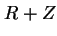
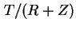
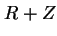
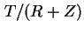

ในระบบที่มีการปฏิสัมพันธ์กับผู้ใช้งาน ผู้ใช้งานจะขอบริการจากระบบกลาง และผลตอบสนองจะส่งกลับไปที่เทอร์มินอล หลังจากเวลาคิด ผู้ใชัจะส่งการขอรับบริการต่อมา ถ้าเวลาตอบสนองเท่ากับ  ช่วงเวลาที่ใช้ต่อหนึ่งวงรอบเท่ากับ  โดยที่ผู้ใช้งานขอรับบริการมีจำนวนเท่ากับ  ในช่วงเวลา
ช่วงเวลาที่ใช้ต่อหนึ่งวงรอบเท่ากับ  โดยที่ผู้ใช้งานขอรับบริการมีจำนวนเท่ากับ  ในช่วงเวลา 
ถ้าในระบบมีจำนวนผู้ใช้งานเท่ากับ 
หรือ
สมการ 7.60 เรียกว่า กฎเวลาตอบสนองที่มีปฏิสัมพันธ์กับผู้ใช้งาน (Interactive Response Time Law)